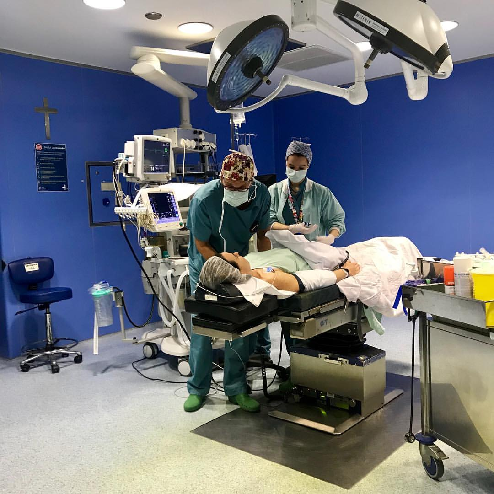
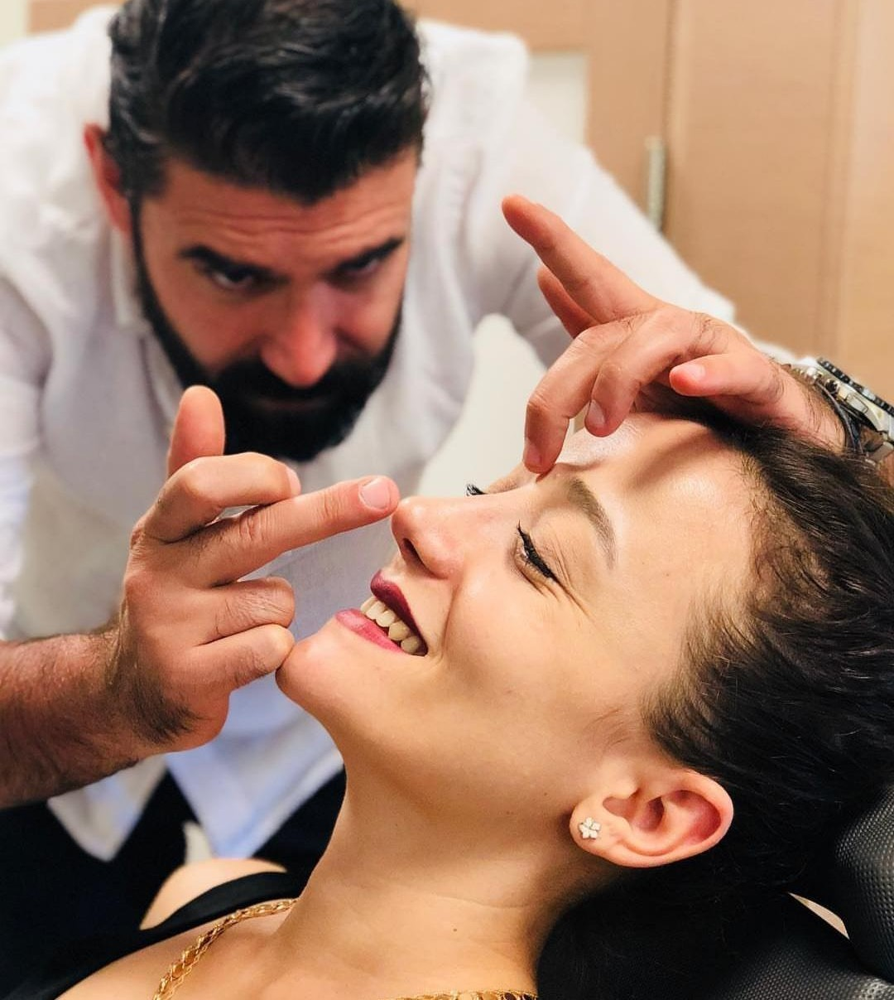
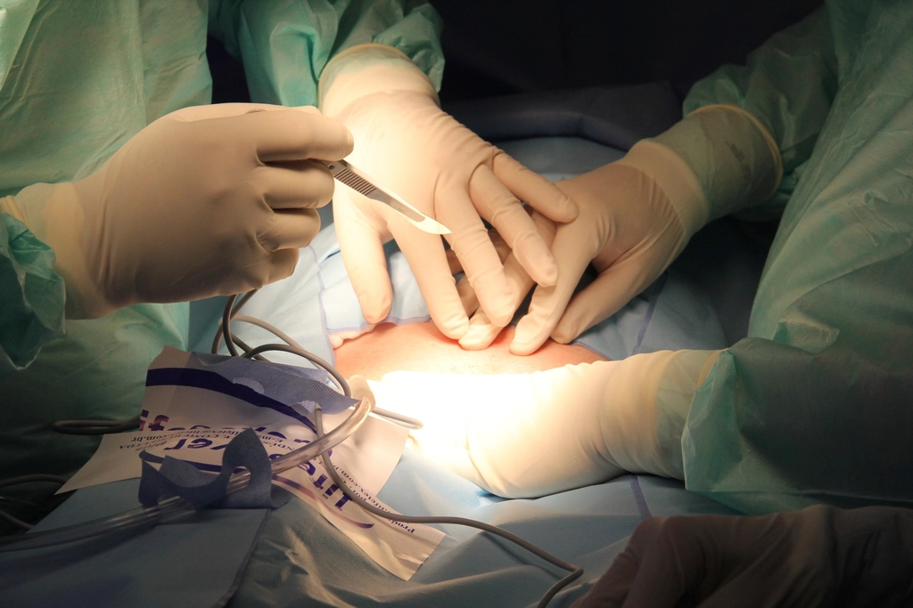
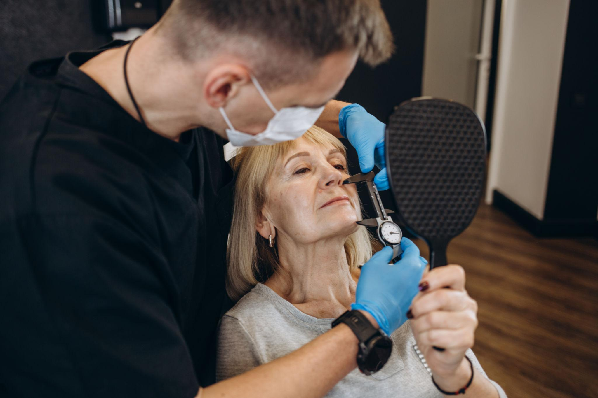
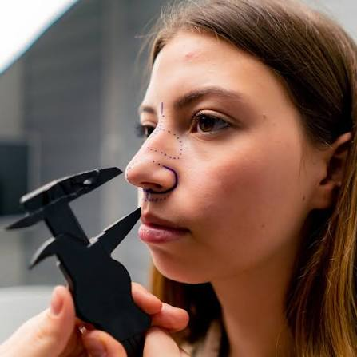
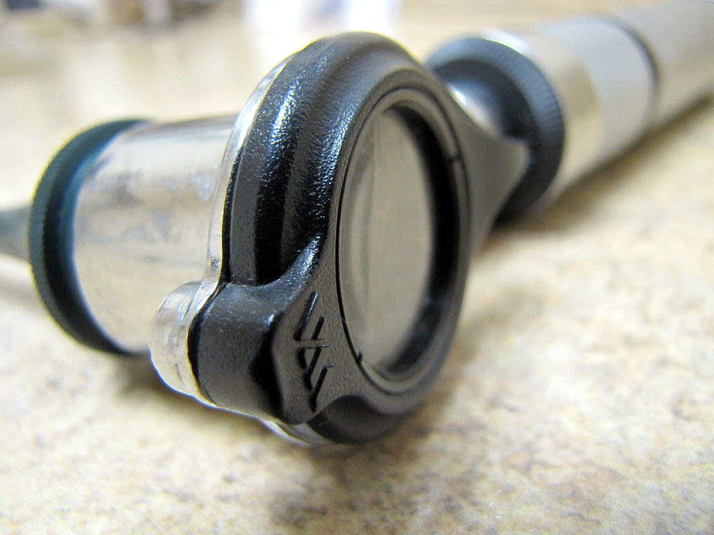
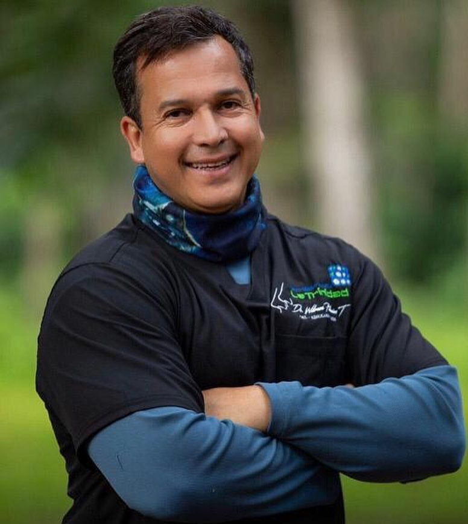

Rinoplastia funcional y estética en el Centro Médico Docente La Trinidad. Especialidad obtenida en la Universidad de Chile en 2008, con un solo criterio: función primero, resultado natural siempre.
Rinoplastia, rinoseptoplastia primaria y secundaria, y mentoplastia.
Casos reales del Dr. Palacios.
Seleccione el día y el horario que le resulte más cómodo.
Puede llamar al Servicio de Otorrinolaringología del CMDLT.
Servicio de ORL · 0212-949-6203 Servicio de ORL · 0212-949-2829Cirugía nasal, rinología y otorrinolaringología general.

Reestructurar y refinar el dorso y la punta manteniendo intactos los ligamentos y la anatomía natural. Un perfil armónico, funcional y en equilibrio con sus facciones.

Tecnología piezoeléctrica: mayor precisión sobre el hueso nasal y menos trauma en los tejidos blandos.

Cirugías previas que no resolvieron. Abordaje abierto e injerto costal cuando la estructura lo requiere.

Cuando el problema no es cómo se ve, sino que no entra aire.
Abordaje del paciente alérgico crónico desde la microbiota, no solo desde el antihistamínico.

Oído, nariz y garganta. Consulta de lunes a viernes en el CMDLT.
Mentoplastia y procedimientos complementarios junto a cirujanos plásticos, cuando el equilibrio del rostro lo pide.
Vea el trabajo, no solo la descripción
Una variedad de casos documentados en varias proyecciones, con el tiempo de postoperatorio de cada foto.
Ver galería de casos
Médico Otorrinolaringólogo · Rinólogo
Soy otorrinolaringólogo y rinólogo. Obtuve mi especialidad en la Universidad de Chile en 2008 y desde entonces mi trabajo gira alrededor de una sola estructura: la nariz. Función y forma, en ese orden.
Atiendo de lunes a viernes en el Servicio de Otorrinolaringología del Centro Médico Docente La Trinidad, en Caracas. Soy miembro de la Sociedad Venezolana de Otorrinolaringología e integro su Comité de Microbiota, donde investigo la relación entre la microbiota nasal y la rinitis alérgica.
En cirugía nasal trabajo con técnicas de preservación y ultrasónicas. No busco transformar caras: busco que el paciente respire mejor y que, cuando se mire al espejo, se siga reconociendo.
"El objetivo más importante en toda rinoplastia es dar un resultado satisfactorio y definitivo a largo plazo. Por eso pido paciencia: la nariz definitiva tarda al menos dos años en verse."
Las dudas más comunes antes de agendar.
Un mínimo de dos años. La inflamación baja por etapas y los tejidos siguen acomodándose durante mucho tiempo después de la cirugía. En algunos casos seguimos viendo cambios hasta los tres o cuatro años. Por eso pido paciencia antes de juzgar el resultado.
Es una técnica que reestructura y refina el dorso y la punta nasal manteniendo intactos los ligamentos y la anatomía natural del paciente. En lugar de retirar la estructura para luego reconstruirla, se preserva y se reposiciona. El resultado tiende a verse menos operado y a envejecer mejor.
Utiliza instrumental piezoeléctrico para trabajar el hueso nasal. El ultrasonido actúa sobre el hueso sin dañar los tejidos blandos que lo rodean, lo que permite mayor precisión y menos trauma que con las herramientas tradicionales.
Sí. La rinoplastia secundaria o de revisión es parte de mi trabajo habitual. Suele requerir un abordaje abierto y, cuando la estructura quedó debilitada, injerto costal para devolverle soporte a la nariz. La valoración inicial define qué es posible en cada caso.
Ambas cosas. Mi primer objetivo siempre es optimizar la función nasal. La forma se trabaja sobre una nariz que respira bien, nunca a costa de ella. Cuando hay desviación del tabique u obstrucción, se corrige en el mismo acto quirúrgico.
Ese es justamente el resultado que evito. Trabajo con técnicas de preservación para que la nariz siga siendo suya: un perfil armónico, funcional y en equilibrio con sus facciones, acorde a lo que usted busca.
La consulta es en el Servicio de Otorrinolaringología del Centro Médico Docente La Trinidad, Edificio Manuel Antonio Pulido Méndez, piso 3, de lunes a viernes y previa cita.
Puede llamar al 0212-949-6203 o al 0212-949-2829 del Servicio de Otorrinolaringología del CMDLT, o dejar sus datos en el formulario de esta página.
¿Tiene otra duda? Llámenos y la conversamos.
Llamar al 0212-949-6203Servicio de Otorrinolaringología del Centro Médico Docente La Trinidad, en Caracas.